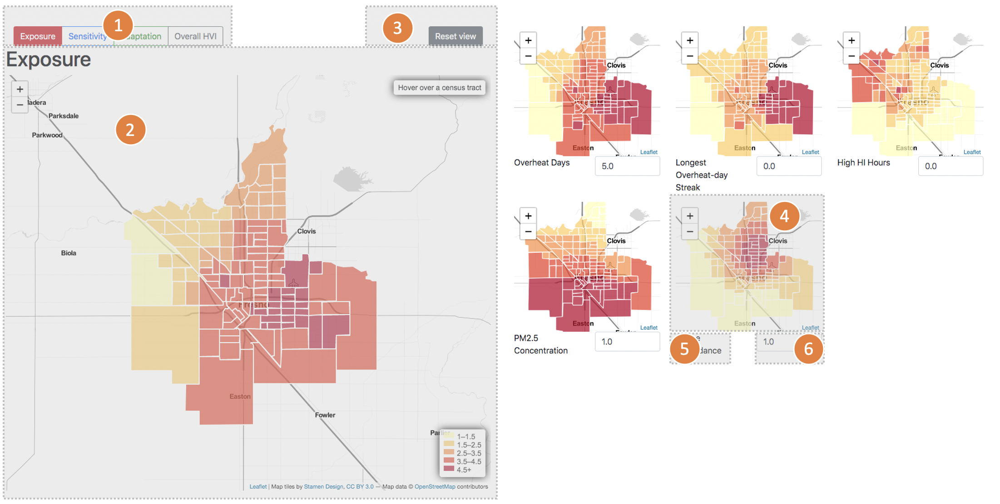

Extreme heat is one of the leading causes of weather-related deaths. It leads to an average of 658 deaths per year (CDC, 2017). Climate change could make heat wave more frequent, more severe, and longer lasting, causing more deaths (IPCC 2007). By late-century (2071–2100), the average temperature of continental US could increase by approximately 5.0°F (2.8°C) for RCP4.5 and 8.7°F (4.8°C) for RCP8.5, relative to 1976–2005. The figure on the right is from (Hsiang et al., 2017). It projected as high as 80% increase in all-cause deaths by the end of the century.
A heat vulnerability index map could highlight sub-groups / regions susceptible to heat induced damages, so that necessary interventions or infrastructure could be prepared ahead of time. It could also assist the planning of emergency responses to improve the resilience to extreme heat events.
Instead of producing one overall heat vulnerability index, three separate HVI sub-indices are constructed: exposure, sensitivity, and adaptation. Exposure reflects the severity of the problem. Currently it includes five outdoor exposure factors: two temperature derived heatwave characteristics, heat index, and two air quality variables. An indoor building heat resistance indicator that characterizes the indoor heat level will be added in the next version. Sensitivity factors identify sub-groups who are more susceptible to severe damages than general public under similar heat exposure. Elderly or children, education, race, poverty, and pre-existing condition fall into this category. The third factor is adaptation, including factors that modifies the response to extreme heat. Income and the availability of green space are in this category.
The following table shows the data sources.
| Factor | Variable | Definition | Source |
| exposure | Overheat days | number overheat days (daily maximum temperature above 30C, and daily minimum temperature above 22C) | derived from hourly temperature from weather underground (Weather History & Data Archive, 2020) |
| Longest overheat-day streak | number of consecutive overheat days | ||
| Hours with dangerous HI | number of hours with heat index in range of "danger" or "extreme danger" | derived with hourly temperature, and RH, from weather underground (Weather History & Data Archive, 2020) | |
| pm2.5 concentration | annual mean concentration in ug/m3 | California Heat Assessment Tool (Four Twenty Seven, 2018) | |
| ozone exceedance | ozone exceeding state standard | ||
| building heat resistance indicator | Developed for the project using building simulation data | ||
| sensitivity | percent elderly | percent of populaiton over 65 | American Community Survey - 5 year estimate, 2013 – 2017 (U.S. Census Bureau, 2017 |
| percent children | percent of population under 5 | ||
| percent non-white | Percent of non-white population | ||
| percent poverty | Percent of population below poverty level threshold | ||
| percent low-education | percent of population without a high school degree | ||
| percent with cognitive disability | Percent of population with “serious difficulty concentrating, remembering, or making decisions.” (U.S. Census Bureau, 2018) | ||
| percent with ambulatory disability | Percent of population with “serious difficulty walking or climbing stairs.” (U.S. Census Bureau, 2018) | ||
| Asthma prevalence | Asthma hospitalization rate per 10,000 people | California Heat Assessment Tool (Four Twenty Seven, 2018) | |
| Heart attack prevalence | Heart attack rate per 1,000 people | ||
| adaptation | median income | American Community Survey - 5 year estimate, 2013 – 2017 (U.S. Census Bureau, 2017) | |
| parks | Percent of the census tract area covered in parks | City of Fresno GIS Data Hub (City of Fresno, 2020) |
The HVI web map consists of three separate HVI sub-index views. The three sub-index views can be toggled using component 1 in the following diagram. In each sub-index map view, the corresponding HVI sub-index is shown on the left (component 2), and a various number of factor map views are shown on the right (component 4). Each factor map view shows an ordinal of 1-5, indicating the severity of the corresponding variable. The HVI sub-index is produced with a weighted average of the factor views for each census tract. The weights of each factor could be adjusted with component 6. User will need to enter a non-negative value in component 6. The values will be normalized to produce the weights.
